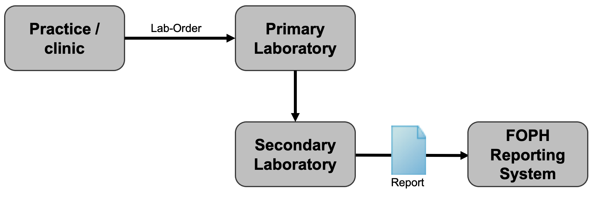

CH ELM (R4)
1.7.0 - release

CH ELM (R4)
1.7.0 - release

This page is part of the Observations of notifiable communicable infectious diseases (v1.7.0: Release) based on FHIR (HL7® FHIR® Standard) R4. The current version which supersedes this version is 1.9.1. For a full list of available versions, see the Directory of published versions
The following use cases serve to illustrate the scenarios that occur in the case of reportable laboratory results that are transmitted to the Federal Office of Public Health. The cases are intended as examples of the representation of laboratory reports. They have not yet been validated in terms of their content and clinical aspects.
This reporting route applies to pathogens such as Neisseria gonorrhoeae, Chlamydia trachomatis and others.
Fig. 1: Reporting path for the standard case
Mr Daniel Meier, born on 22.08.1960, resident in 3000 Bern, consults Dr Monika Giacometti at the cantonal hospital on 11.07.2023. Mr Meier complained of itching of the urethra and pain when urinating. As a urinary tract infection is suspected, a swab is taken and sent to the laboratory for analysis. By means of isolation in culture, Neisseria gonorrhoeae detected (LOINC 697-3) is on 14 July 2023 . The laboratory reports the notifiable laboratory finding to the reporting system of the Federal Office of Public Health.
Private service providers (so-called brokers) who transmit the reportable laboratory findings to the reporting system of the Federal Office of Public Health on behalf of the laboratory are shown in the FHIR document as the author of the document.
Mrs Hanna Felber, born on 17.10.1985, resident in 4552 Derendingen, consults her family doctor Dr Peter Hauser at his practice in Solothurn on 29.7.2023. Mrs Felber complains of burning when urinating and vaginal discharge. As a urinary tract infection is suspected, a urethral sample is taken using a sterile procedure and sent to the laboratory. Chlamydia trachomatis (LOINC 6349-5) is detected by culture on 4 August 2023. The laboratory reports the positive reportable laboratory result to the Federal Office of Public Health, stating the sample material used (SNOMED CT 119393003).
This reporting channel applies to pathogens such as Salmonella spp., Neisseria meningitidis and others.
Fig. 2: Reporting path for confirmation tests
Salmonella spp. was found in a blood sample. A report of the findings is sent to the ordering party (practice/clinic); a first report is sent to the FOPH (stating the order number and the ordering doctor/clinic). As it is not the S. enteritidis type, the sample is sent to the National Centre for Enteropathogenic Bacteria and Listeria ("NENT", secondary laboratory) for precise typing. The secondary laboratory requires master data on the client and the patient, information on the origin of the sample (food, faeces, blood, urine, etc.), the desired typing and the previous results. Once typing has been completed, the secondary laboratory sends its findings (the 2nd report) together with the order number of the referring laboratory to the FOPH.
A cerebrospinal fluid sample was sent by the district hospital on an emergency basis and examined directly under the microscope. Gram-negative diplococci were found. This finding of an infection with Neisseria meningitidis must be reported within one day JSON. Further processing (culture, genome sequence) is carried out by the National Centre for Meningococci (secondary laboratory), which in turn sends a complete report together with the order number of the primary laboratory (50002610 in the example) to the Reporting Systems Section of the FOPH JSON.

Fig. 3: Reporting route when passing on a laboratory order